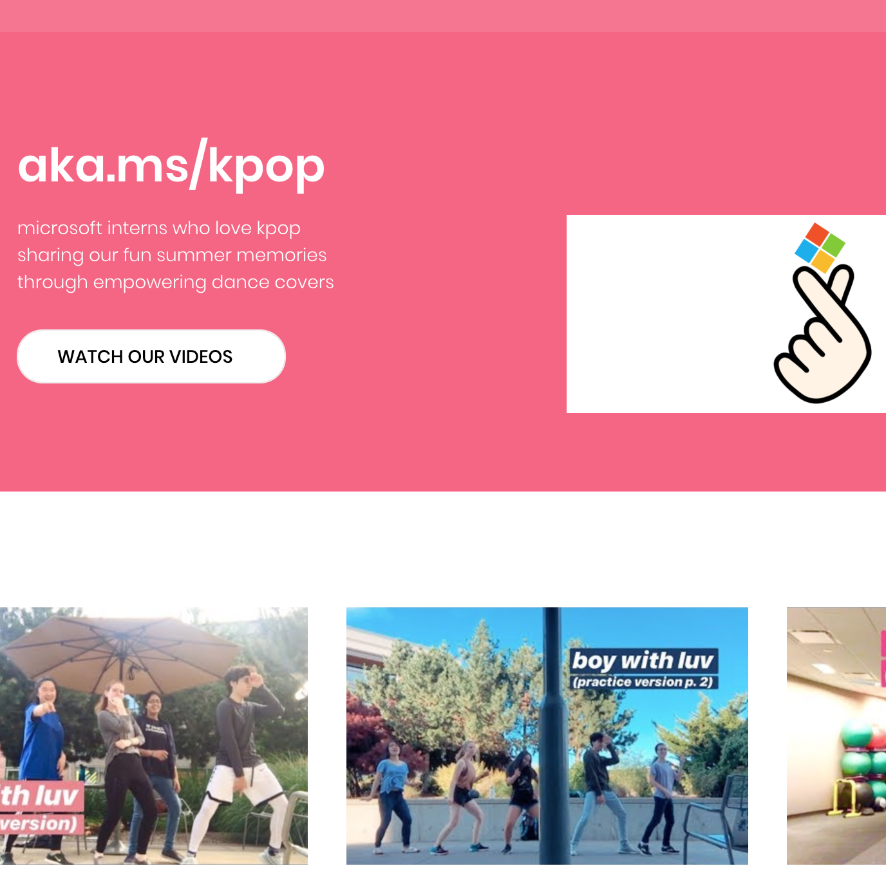
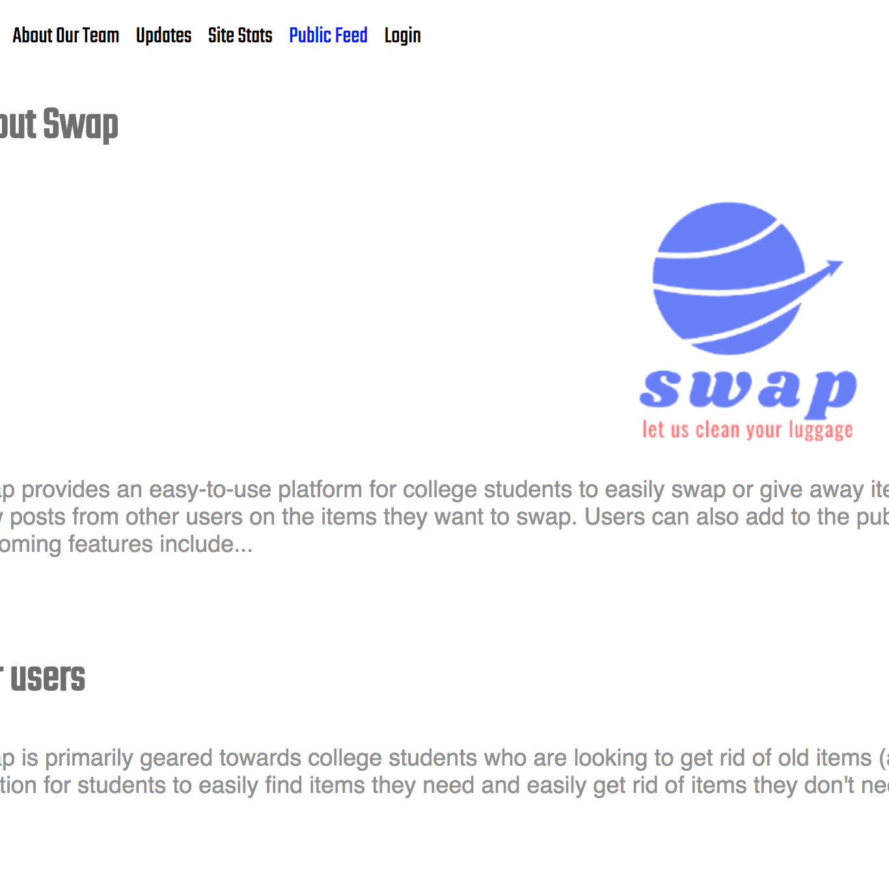
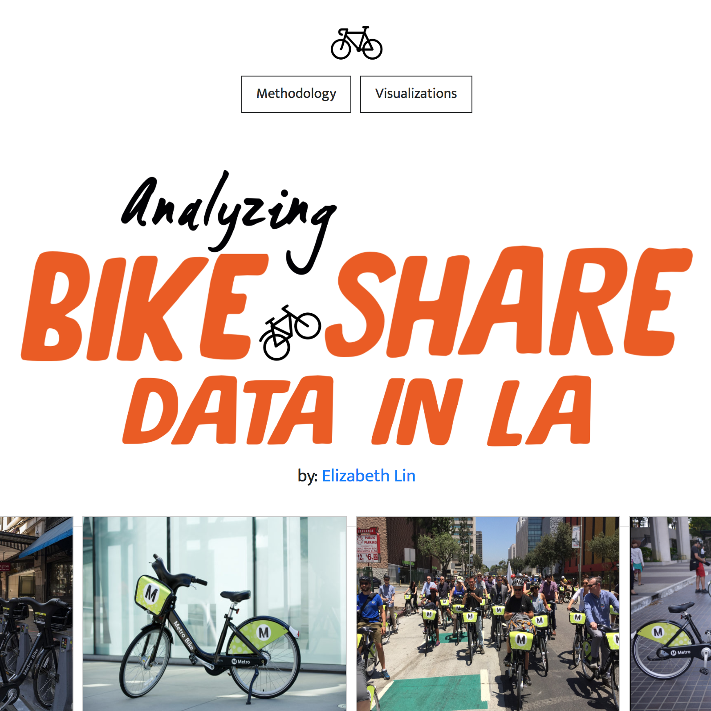
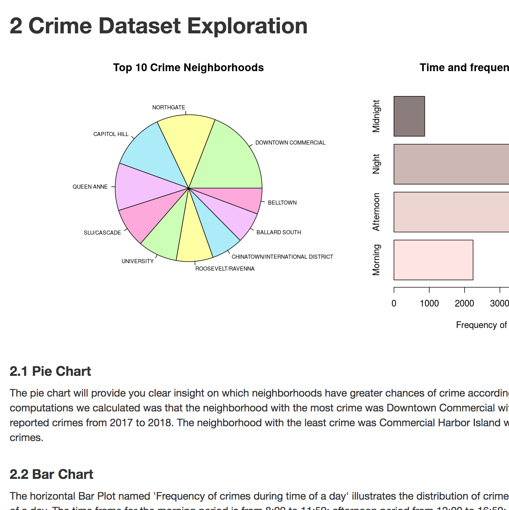
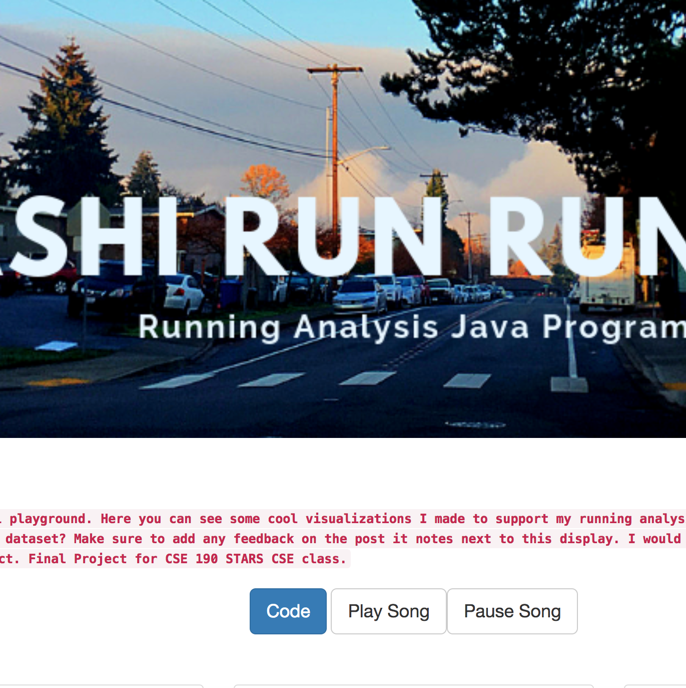
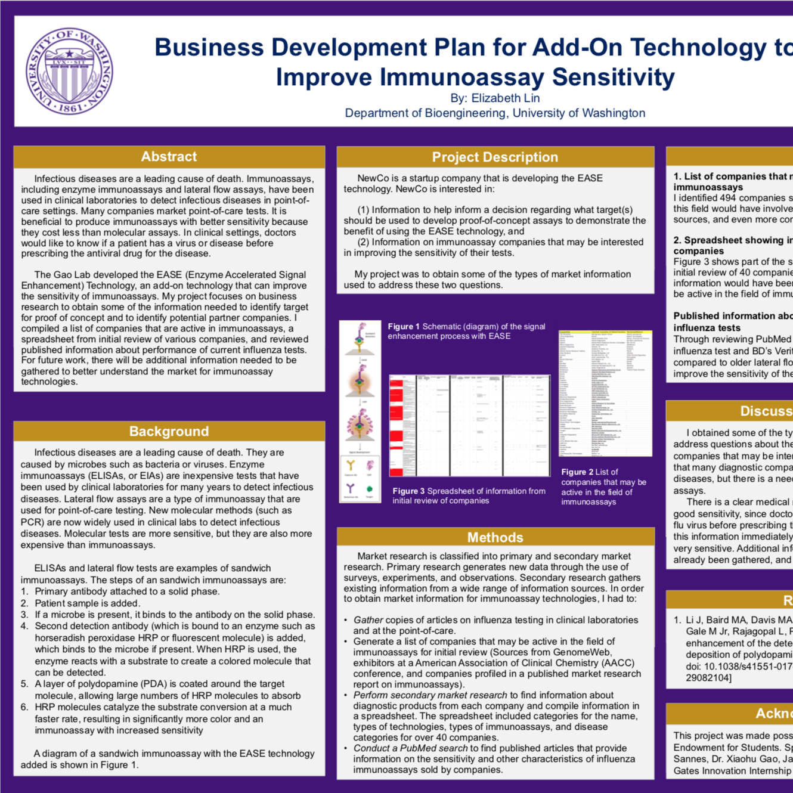
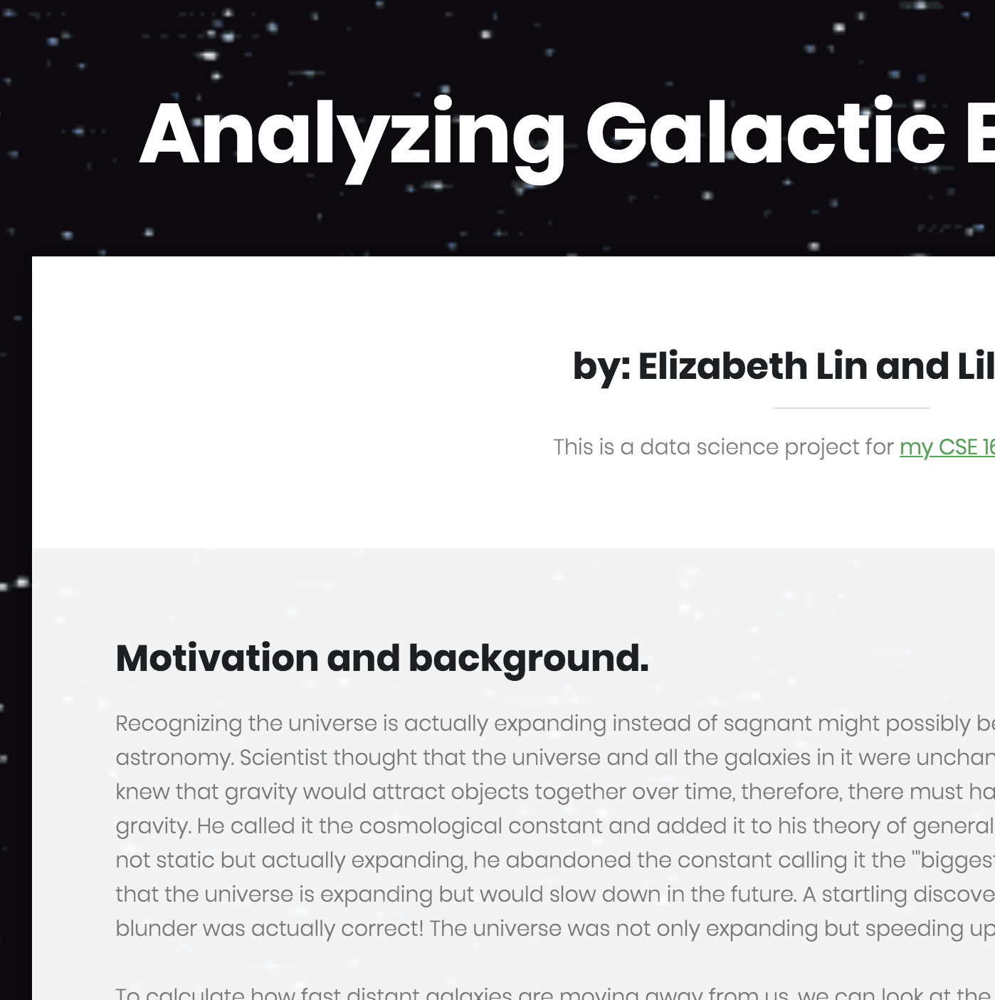
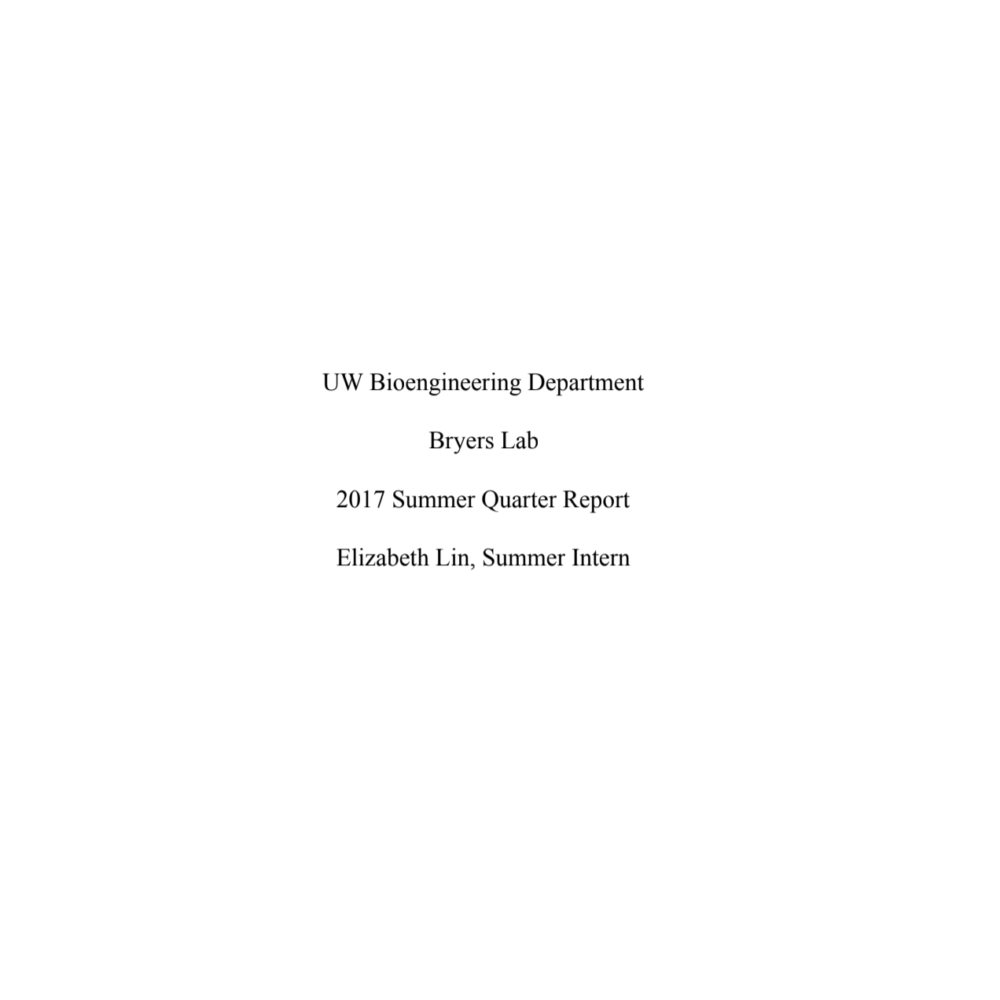
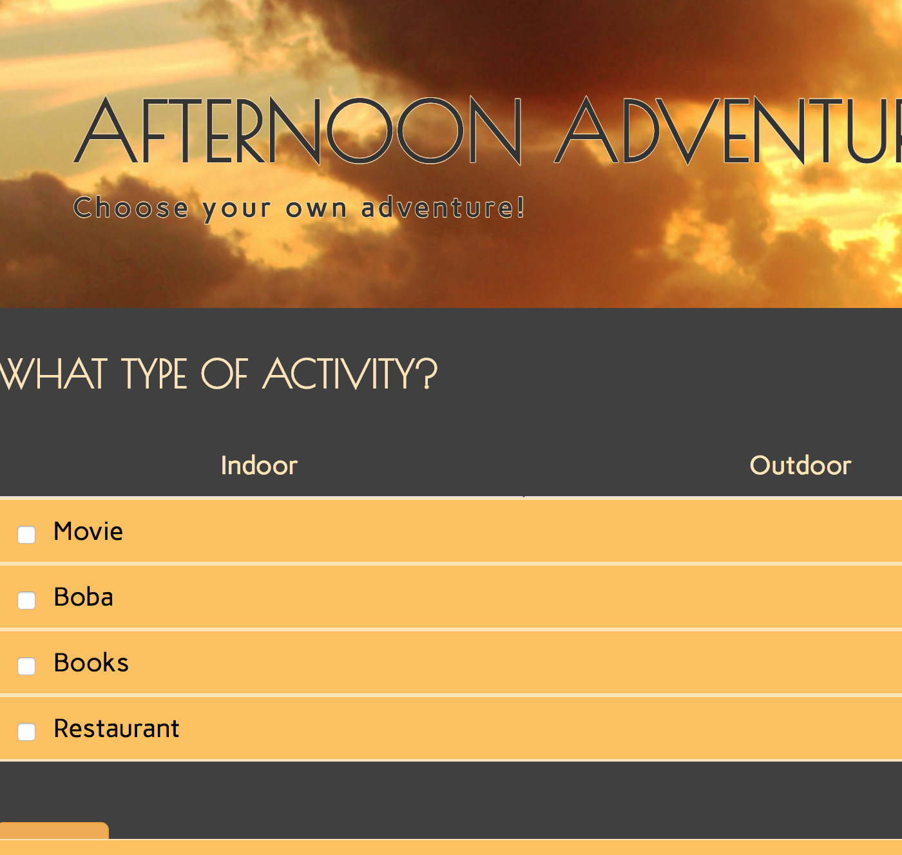
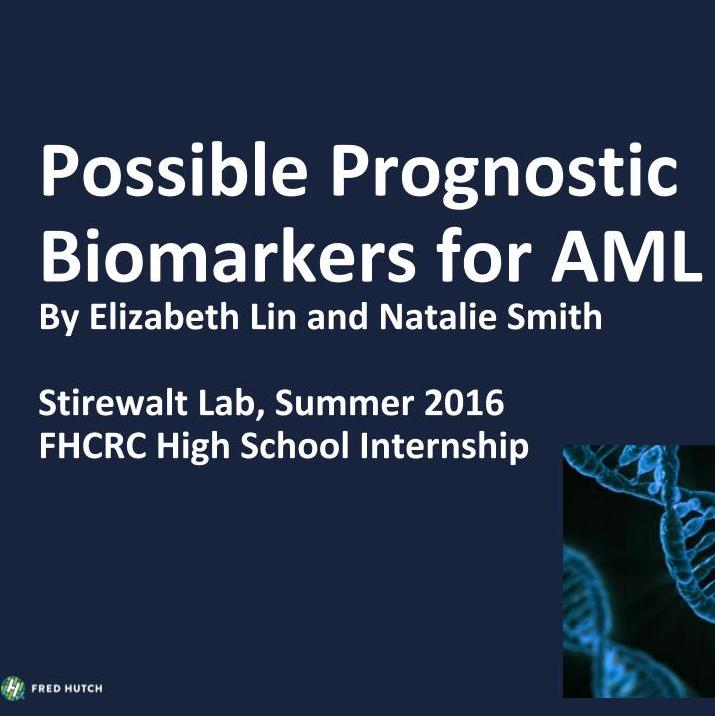

 aka.ms/kpopLanguages: HTML/CSS Oh my my my~ Watch some cool videos of Microsoft Interns dancing to kpop covers :) |
||
 SwapLanguages: Java Servlets, Javascript, HTML/CSS | Tools: Google App Engine Web application focused on crafting an efficient material exchanging process for post-graduates and early career students. Utilize Google Maps API, ML Image Analysis to sort image and text data from end-to-end users. |
 Analyzing Bike Share Data in LALanguages: R, Python | Tools: Tableau Desktop, RStudio Submission for Capital One Engineering Summit Challenge. Created a web application to understand Bike Share Data in LA. Use RStudio to perform data wrangling and separate dataset into various data frames for analysis. Calculate values like average distance traveled of all bikers using latitude/longitude coordinates (using Python scripts). Create data visualizations to proposed questions and additional graphs for supplement analysis. |
 Public Safety in SeattleLanguages: R | Tools: Shiny, Tableau Desktop INFO 201 Final Project. Crafted a Shiny App in R that represented visualization of crime and fire data in Seattle from 2017 to 2018. Utilized R to display charts of the crime amounts in different neighborhoods in Seattle. This interactive platform allows clients to understand the level of danger in Seattle regions and the prevalency of different types of crime. This data is from police reports and fire calls collected by the City of Seattle. |
 Dashi-Run-Run-RunLanguages: Python | Tools: Tableau As an avid runner, I wanted to utilize Tableau Desktop as an efficient and easy-to-use tool to visualize my running habits. I was able to answer several questions using the dynamic toolset to craft conclusions with my data. I compiled my data in a CSV file and imported into Tableau for further analysis and design. |
 Business Development Plan for Add-On Technology to Improve Immunoassay SensitivityTools: Market Research, Excel, Powerpoint, Data Analysis My final poster for the 2018 CoMotion Mary Gates Innovation Internship, presented at the Summer Undergraduate Research Poster Session on August 15, 2018 at Mary Gates Hall Commons. |
 Analyzing Galactic EnvironmentsLanguages: Python | Tools: Sci-Kit Learn My final project for my CSE 160 Data Programming class. Our assignment was to utilize a selected dataset to represent our data. I worked with a partner to create a graphical representation of our galaxy data which hundreds of rows and analyze our overall results to craft results to our proposed research questions. |
 Testing Biofilm Formation on Various Test SurfacesTools: Google Docs, Culturing Bacteria, Lab Etiquette Lab report: I worked in the Bryers Lab, where I was assigned a project to analyze bacterial adhesion on various test surfaces. Through weeks of experimentation and immersive learning on bacterial biofilms, I was able to run my assays and view bacterial growth through spectrocopy. |
 Afternoon Adventures
|
 Possible Prognostic Biomarkers for AML
|